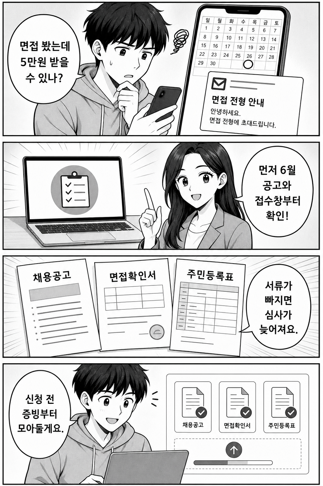
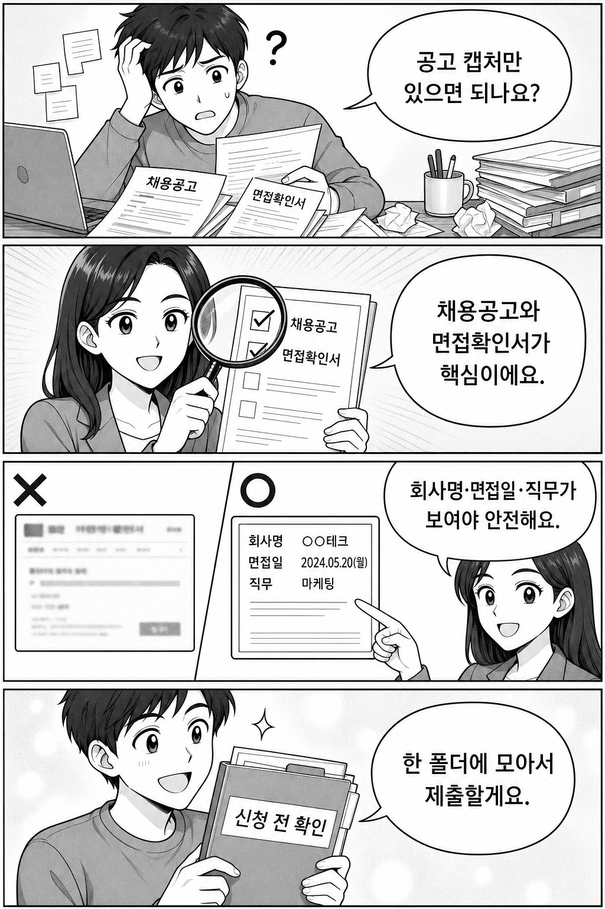
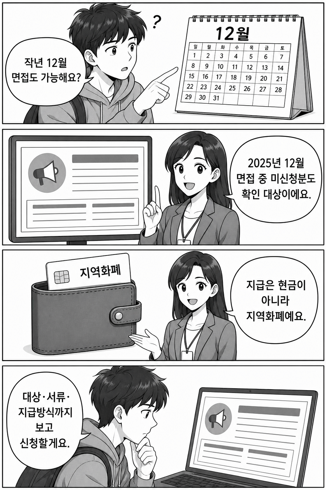

결론부터 말하면, 경기도 청년 면접수당은 2026년 1차 모집이 6월로 안내되어 있습니다. 면접 1회당 5만원, 연 최대 15만원까지 지역화폐로 받을 수 있지만, 신청 전에 채용공고문과 면접확인서를 먼저 챙겨야 합니다.
특히 2025년 12월 면접을 보고 아직 신청하지 않은 경우는 2026년 1차 모집에서 소급 신청 가능 여부를 확인해야 합니다. 아래는 공식 안내 기준으로 신청 전에 볼 부분만 추린 글입니다.

가장 많이 놓치기 쉬운 부분은 “면접을 봤다”는 사실을 어떻게 증명하느냐입니다. 경기도청 안내에는 온라인 신청서와 개인정보활용동의서, 주민등록등본, 채용공고문, 면접확인서 또는 면접확인서대체서약서가 제출서류로 정리되어 있습니다.

면접확인서가 없다면 끝이 아니라, 면접확인서대체서약서와 함께 면접 사실을 소명할 자료가 필요합니다. 공식 안내 예시는 문자·이메일 등 면접 안내문, 면접 결과, 담당자 명함, 면접장 촬영사진 등입니다. 핵심은 회사명, 면접일, 직무 또는 면접 사실이 읽히는 자료를 모으는 것입니다.
모든 면접이 자동으로 되는 것은 아닙니다. 공식 안내에는 교육 등 훈련과정 참여를 위한 면접, 직계 존비속 등 가족이 대표자인 사업장 면접, 전화·문자·메신저로 진행한 면접 등은 신청대상이 아닌 경우로 예시되어 있습니다. “면접 비슷한 대화”였는지, 실제 취업 면접이었는지부터 확인해야 합니다.

이 글은 신청을 대행하거나 선정 가능성을 보장하지 않습니다. 접수일, 세부 제한, FAQ는 공고가 갱신될 수 있으니 제출 직전에는 반드시 공식 페이지를 다시 확인하세요.